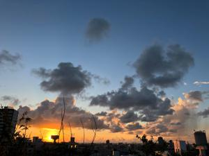
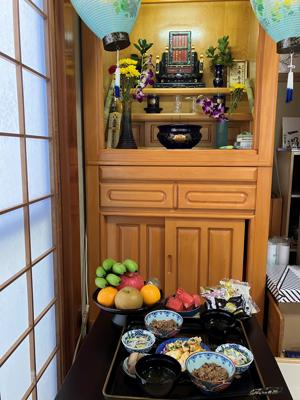

うるがいの話 ある日
最新: 台風６号被害保証されず【うるがいの話 ある日】とは 一日だけのプログです
『うるがいの話』の最新一日だけのプログで、通信料が少なく経済的だ。カニの画像をクリックすると全ての日付が載る『うるがいの話』サイトを表示します
|
|
【うるがいの話】 うるがい(ｳﾙｶﾞｲ urugai)とは、『もずくがに』の名前でとても大きくなります。 |
|---|---|
|
|
【カミマヤーの話】 猫のことを方言でマヤーといいます。カミマヤー（kamimayaa）とは、神の猫のことです。 |
|
【たながぁの音楽】 たながぁ（ﾀﾅｶﾞｰ tanagaa）とは手長えびのことで、何種類かあり大きいのは車 エビぐらいになります。 |

|
【ぶながぁの話】 ぶながぁ(ﾌﾞﾅｶﾞｰ bunagaa)とは、赤い髪の毛、赤い身体、そして身長は１ｍ２０ｃｍ ぐらい、川の蟹を食べているの目撃された。場所は沖縄県国頭郡大宜味村のと ある村僕の隣近所に住んでいる爺さんから、聞いた話です。 |
|
|
【ギーマの話】 ギーマ(giima)とは、山原の里山に咲くスズランに似た、 花を付けます。実は食べられます、 気が付くと口の周りが紫になっています。 |
2023年08月29日 (火）台風６号被害保証されず
21:30
 
台風６号で仏間の部屋にあるクーラーの『冷媒配管、室外機と室内機をつなぐ
電線、ドレンホース等を通すために壁に穴』から、水が洩れて仏間のクーラー
下の近辺がエライことになった。いつも利用している地域のリフォーム会社の
トモさんに連絡すると、損害保険会社に保証になるか連絡してみたらと言われ
８月１７日（木）に問い合わせ先に電話すると、翌日事故サポートのマスミさ
んが、とりあえず請求書を、送付しますと言われた。そして土日が開けて８月
２１日（月）今度はシノダさんから、同じことを言われた（マスミさんから同
じ事をいわれましたとツッコミを入れる）。そして、リフォーム会社の見積も
りも準備して、請求書を待っていたら昨日、損保の女性の人から電話が、あっ
た。被害の原因は分かりましたかと、聞かれクーラーの穴から水漏れですと答
えると、保証対象外ですねと言われ、あっさりと了解する。
1.建物の事故例
台風・竜巻等による強風で屋根瓦が破損した。
台風・竜巻等による強風で飛んできたものが家を直撃して、壁が破損した。
2.家財の事故例
台風・竜巻により、窓ガラスが割れて、風雨が入り、家電製品が壊れてしま
った。（窓を閉め忘れたことにより家財に損害が生じた場合は、補償の対象
外です。）
今回は、家財の事故例に該当するらしい。ま、想定なので落ち込まないが。
今朝の仏壇にウサギ物は、私が行う。ヨメは、７時にはマンションへ行くので
オオ、明日も同じである。
１７時４７分 ビットコインの総資産 ￥１１、０５１（↑３９）